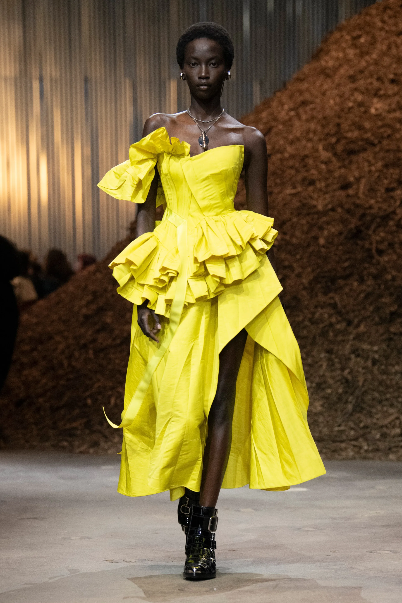
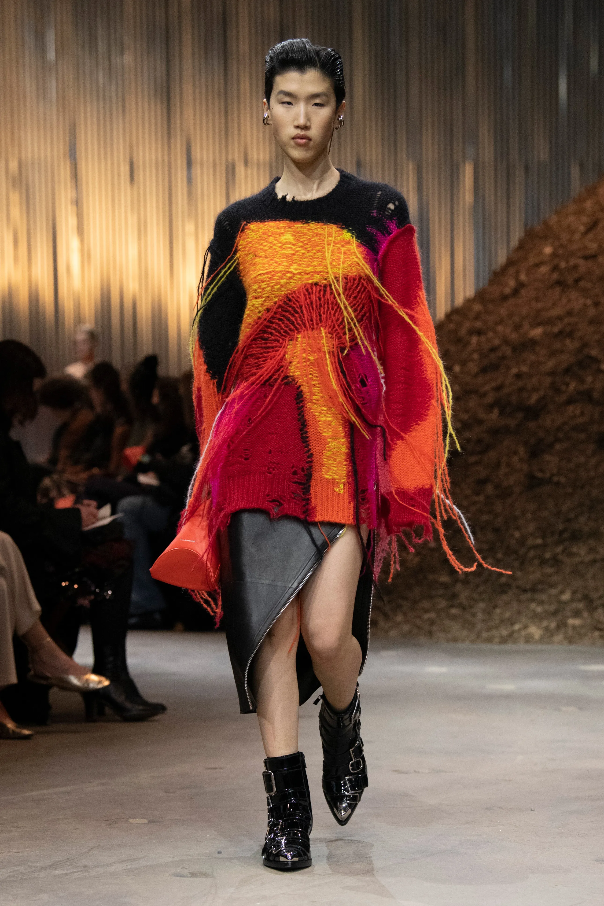
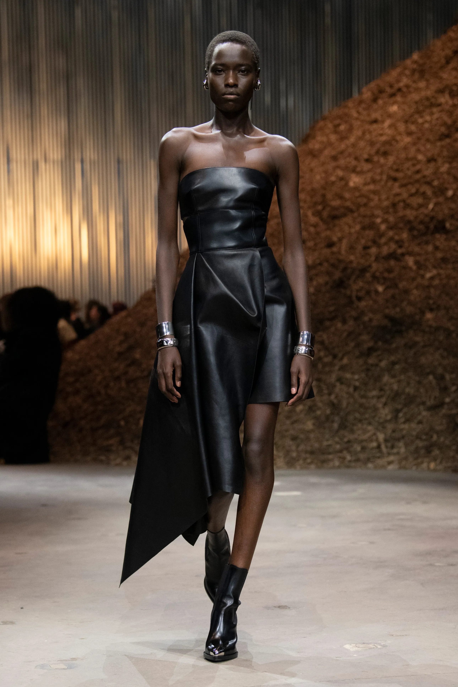

5 cosas que hay que saber sobre el desfile de otoño-invierno 2022-2023 de Alexander McQueen
Analizamos los cinco elementos clave del regreso de Alexander McQueen a las pasarelas de Nueva York (que no visitaba desde 1999), de manos de Sarah Burton y su colección de otoño-invierno 2022/2023.

El desfile se presentó en Nueva York
El arranque de 2022 ha marcado la vuelta de la moda a su particular normalidad, y pocas marcas en la historia de la moda han encarnado la teatralidad tradicional de los desfiles como Alexander McQueen. Pero en su regreso a la pasarela física, Sarah Burton no quería que olvidáramos las epifanías que nos trajo el confinamiento. Parece que ha pasado una eternidad, pero en 2020 todos hablábamos de reconectar con la naturaleza, que corriese el aire en nuestras ciudades y del medioambiente que nos une. Para escenificar su recordatorio de aquellos valores, Burton eligió el paisaje urbano por excelencia: la ciudad de Nueva York, y más concretamente, el edificio Agger Fish de Brooklyn. En esta nave industrial, se elevaban gigantescas moles de madera procedente de árboles caídos (y reenviada a granjas con fines sostenibles después del desfile) y perfumaban el espacio con un aroma que rara vez se encuentra en las grandes urbes.

Se basó en el concepto de micelio
En McQueen, la palabra del día fue micelio: el mágico mundo subterráneo de las raíces y los hongos que conectan los organismos vivos de la naturaleza. "Es un tema muy actual, y lo que más me gusta de todo es cómo los árboles hablan entre sí y se curan unos a otros, y cómo funcionan juntos como una comunidad creativa", dijo Burton entre bastidores después del desfile, garantizando a la prensa congregada que no había tomado microdosis de alucinógenos, aunque "¡probablemente lo necesite!". Sin embargo, si esas microdosis sirven para estimular la creatividad, está claro que ella no las necesita. La colección de Burton fue un regreso triunfal a la pasarela donde ilustró su propia conexión con la naturaleza a través de prendas impregnadas de poesía y sensibilidad.

Cada look desprendía un carácter único
En los vestidos que pasa semanas, si no meses, perfeccionando hasta la más mínima costura, Burton expresó su inspiración natural en siluetas que parecían florecer, algunas creadas con punto multicolor que imprimía un aire hippie-punk, como tejido a mano, a sus naturalistas urbanas. “Quería que cada vestido tuviera un carácter propio y vibrante, del mismo modo que en la familia McQueen caben todo estos personajes”, explicó. "Sentí que todos estos personajes diferentes podían coexistir en Nueva York, o en cualquier ciudad, y eso influyó definitivamente en la forma que tomó la colección". De su traslado temporal a Estados Unidos –donde McQueen hace mucho negocio– dijo que se trataba de llevar la montaña (o, en el caso del set del desfile, el túmulo) a Mahoma. "Se trata de conectar con las mujeres a las que vestimos aquí y mostrárselo para que ellas también vivan la experiencia. Es muy importante".